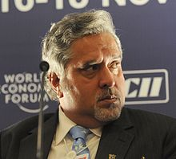

Vijay Mallya is an Indian businessman and politician. The son of businessman
Vittal Mallya, he is the ex-chairman of United Spirits Ltd, the largest spirits
company in India and continues to serve as Chairman of UB Group, an Indian
conglomerate with interests in beverage alcohol, aviation infrastructure, real
estate and fertiliser among others. He has been the Chairman of Sanofi India
(previously Hoechst AG and Aventis) as well as the Chairman of Bayer CropScience
in India for over 20 years, in addition to being the Chairman of several other
companies.He recently announced that he shall retire from the chairmanship of
Sanofi India.
Once called the "King of Good Times" due to his extravagant lifestyle, Mallya
and his companies have been embroiled in financial scandals, and controversies
since 2012. Mallya left India on 2 March 2016 after saying he wanted to move to
Britain to be closer to his children. A group of 17 Indian banks are trying to
collect approximately 9,000 crore (US$1.3 billion) in loans which Mallya has
allegedly routed to gain 100% or a partial stake in about 40 companies across
the world. Investigative agencies, such as Income Tax Department and the Central
Bureau of Investigation for charges including financial fraud and money
laundering, and the Attorney General said that Mallya's assets abroad are "far
in excess to loans taken by him".The 17 banks petitioned the Supreme Court of
India in March 2016 to try to prevent Mallya from leaving the country, but the
Indian government indicated that he had already left. The Enforcement
Directorate of India also filed a money laundering case against him in March
2016 for allegedly sending abroad some 900 crore (US$130 million) that had been
loaned to his airline. On 24 April 2016, the Ministry of External Affairs
(India) revoked Mallya's passport, and he resigned from the Rajya Sabha on 2 May
2016, the day before the Ethics Committee of the Rajya Sabha was prepared to
recommend his expulsion. Currently the Enforcement Directorate is seeking
Interpol to raise an international arrest warrant against Mallya. Also, the High
Court of Judicature at Hyderabad issued a non-bailable warrant against Mallya on
13 March 2016 for his failure to appear in the court regarding an allegation of
cheating the GMR Hyderabad International Airport Ltd by issuing them a
dishonoured cheque for 50 lakh (US$74,000).
Mallya also co-owns the Formula One team Sahara Force India. His companies own
Indian Premier League team Royal Challengers Bangalore, the I-League teams Mohun
Bagan AC and East Bengal FC. He is also a member of the World Motor Sport
Council representing India in the FIA. He is also known for having launched
Kingfisher Airlines, an airline established as a major business venture in 2005
that later became insolvent and was shut down in 2012. Mallya also served in the
Rajya Sabha, the upper house of the Parliament of India, for his home state
Karnataka.